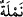
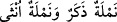
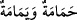
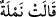
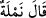
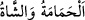
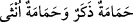
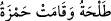
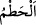
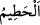

“Bir karınca: Ey karıncalar! Yuvalarınıza girin;” dedi. Sanki karınca Süleyman
(a.s.)’ın ve ordularının vâdiye doğru yöneldiğini görünce onlardan kaçtı ve bir çığlık
atarak oradaki diğer karıncaları da uyardı. Onlar da onun peşine takılarak kaçtılar.
Karıncaların bu hâli, akıl sâhibi insanların birbirlerine hitap etmelerine, öğüt
vermelerine benzetilmiş ve bu yüzden de onların yerine konulmuşlardır. Şöyle ki bu
karınca konuşan, diğerleri kendilerine söz söylenen kimseler kabul edilmiştir. Bununla
birlikte Allah’ın o karıncada konuşma, diğerlerinde ise akıl ve anlayış kabiliyeti
yaratmış olması da imkan dışı değildir.
Karınca horoz veya koç ya da kurt büyüklüğünde iki kanatlı topal bir karınca idi. O
vâdideki karıncaların kraliçesi/büyüğü/ulusu idi. İsmi Münzira, Tâhiye ya da Hurmâ
idi. Tevrat’ta, İncil’de veya bazı ilâhî sahîfelerde bu isimle isimlendirilmişti. Allah bu
isimle onu Süleyman (a.s.)’dan önceki peygamberlere tanıtmış, konuştuğu için bu ismi
ona tahsis etmişti. Aksi halde bir karıncanın nasıl özel bir ismi olduğu düşünülebilir?
Karıncalar birbirlerine isim vermezler ve insanların da şekillerini birbirinden
ayıramazlar ki onlara isim versinler. Onlar at, köpek ve diğer evcil hayvanlar gibi
insanların mülkiyeti altına girmezler. Nitekim Süheylî (r.h.)’ın Kitâbü’t-Ta’rîf ve’l-
i’lâm adlı eserinde böyle geçmektedir.
“__WORD__ kelimesi, sonuna müenneslik alâmeti bitiştiği için hakîkî müennestir. “__WORD__
kelimesi, erkek için de ve dişi için de kullanılır. Birbirinden ayırmak istendiğinde “__WORD__ (erkek karınca, dişi karınca)” gibi dışardan bir mümeyyize ihtiyaç
duyulur. Aynı şekilde “__WORD__ kelimeleri de lafzî müenneslerdendir.
İmam (Râzî) zikretmiştir ki: “Katâde bir gün Kûfe şehrine vardı, insanlar etrafına
toplandılar. Katâde: “Bana istediğinizi sorun.” dedi. O zaman henüz taze bir delikanlı
olan Ebû Hanîfe de oradaydı. “Ona Süleyman (a.s.)’ın karıncasının erkek mi, dişi mi
olduğunu sorun.” dedi. Onlar da sordular. Katâde cevap veremedi. Bunun üzerine Ebû
Hanîfe: “O dişi bir karınca idi.” dedi. Ona: “Bunu nereden bildin” diye sordular.
“Allah’ın kitabındaki “__WORD__ âyetinden. Eğer erkek olsaydı “__WORD__ buyururdu.” diye
cevap verdi. Çünkü “__WORD__ kelimesi, hem erkek hem de dişi için kullanılması
bakımından “__WORD__ kelimeleri gibidir. Bunların erkek ve dişisi “__WORD__ gibi bir alâmetle birbirinden ayrılır. “__WORD__
” denilmesi mümkün değildir.
“Süleyman ve ordusu farkına varmadan sizi ezmesin!” yâni kırıp parçalamasın
“dedi.” Çünkü “__WORD__ kırmak, parçalamak demektir. Kâ’be’nin Hicr’ine de “__WORD__
denir. Çünkü bu kısım Kâ’be’den kırılmış, ayrılmıştır.
Âyette kasdedilen, Süleyman (a.s.)’ın ordusunun çiğnememesi ve telef olmamaları
için karıncaları yuvalarına girme konusunda geri kalmaktan ve gecikmekten
nehyetmektir.
Eğer “Karınca, Süleyman (a.s.)’ı nasıl tanıdı?” diye sorarsan, şöyle cevap veririz: O,
Süleyman (a.s.)’a itâatle emrolunmuştu. Dolayısıyla kendisine itâatle me’mur olduğu
kimseyi tanıması gerekir. Ayrıca karıncaya bunun da üstünde bir anlayış verilmiştir.